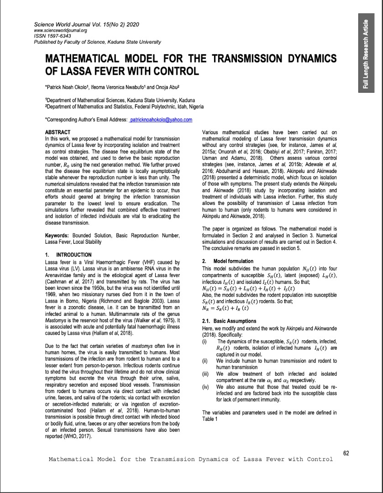

Publications
| 2020 | ||
|
 |
Mathematical model for the transmission dynamics of Lassa fever with control
In this work, we proposed a mathematical model for transmission dynamics of Lassa fever by incorporating isolation and treatment as control strategies. The disease free equilibrium state of the model was obtained, and used to derive the basic reproduction number, 𝑅0 using the next generation method. We further proved that the disease free equilibrium state is locally asymptotically stable whenever the reproduction number is less than unity. The numerical simulations revealed that the infection transmission rate constitute an essential parameter for an epidemic to occur, thus efforts should geared at bringing the infection transmission parameter to the lowest level to ensure eradication. The simulations further revealed that combined effective treatment and isolation of infected individuals are vital to eradicating the disease transmission.
|| || paper || |